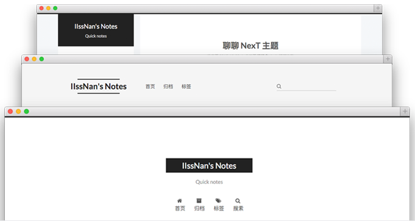

本文主要记录了本站所进行的配置
博主使用的是 NexT 主题，可以选择自己喜欢的 主题，其他主题的配置应该类似，但本文配置不保证其他主题适用;
文中：
站点配置文件 是根目录下的 _config.yml 文件。每次修改 站点配置文件，需重启才能生效
主题配置文件 是主题目录下的 _config.yml 文件
安装 NexT 主题
下载 NexT 主题
打开文件夹：your_dir/themes，在文件夹内右键，点击 Git Bash Here，调出 Git 命令行；
运行：
$ git clone https://github.com/iissnan/hexo-theme-next.git
启用 NexT 主题
将下载的文件夹重命名为 NexT，修改 站点配置文件 的 theme 默认值 landscape 为 NexT
|
|
重启服务器 $ hexo s ，在浏览器地址栏输入 localhost:4000 就可看到 NexT 主题应用成功
配置 NexT 主题
主题外观

NexT 目前提供了三种外观，可通过修改 主题配置文件 选择你喜欢的板式
|
|
首页只显示摘要
修改 主题配置文件
|
|
语言
NexT 主题导航栏等默认是英文，要修改为你使用的语言
在 your_dir/themes/NexT/languages 文件夹下，找到对应的语言文件
修改 站点配置文件，language 值为对应语言文件夹名
|
|
标签 tags | 分类 categories
首先新建 tags | categories 页面
$ hexo new page tags$ hexo new page categories
然后打开 tags | categories 文件夹下的 index 文件，添加： type: tags | type: categories
tags
|
|
categories
|
|
修改 主题配置文件，添加 tags 和 archives 到 menu 下
|
|
可通过修改 menu_icons 下的内容修改图标，NexT 使用的是 Font Awesome 图标库
在任意文章下添加 tags | categories
|
|
代码块样式
代码块有 normal | night | night eighties | night blue | night bright 五种样式
可通过修改 主题配置文件 进行选择
|
|
背景动画
在 主题配置文件 选择你喜欢的动画，把对应的值改为 true 即可应用
|
|
设置 RSS
在根目录下安装 hexo-generator-feed 插件
$ npm install hexo-generator-searchdb --save
主题配置文件 下 RSS 字段的值(不懂)
|
|
第三方服务
评论系统
NexT 支持多款评论系统
DISQUS 正常情况下国内不能访问，“多说”已经关闭。
畅言 、友言 也不错，NexT 也已集成。
博主用的 网易云跟帖
各评论系统集成步骤基本类似：
- 注册账号
- 进入到后台管理，填写站点信息
- 获取代码（仅需要代码中的 ID 或 Key，不需要把代码添加到你博客中）
- 修改 主题配置文件
用什么评论系统修改 主题配置文件 中对应代码
Disqus
填写站点信息时，Website Name 项填写 Disqus 唯一标示名 shortname（貌似要和 GitHub 名对应）
|
|
网易云跟帖
填写站点信息时，站点网址不能填写 GitHub 域名，要填写你购买的域名
网易云跟帖本地测试需要做些配置。具体可查看 网易云跟帖本地测试博主没有在本地测试
|
|
畅言
|
|
友言
|
|
数据统计
博主用的 不蒜子统计，NexT 主题的话，只需修改 主题配置文件
|
|
本地查看时可能统计出来的数比较大，部署到线上没毛病就好
站内搜索
博主用的 Local Search 搜索
安装 hexo-generator-searchdb 插件,
在根目录执行以下命令:
$ npm install hexo-generator-searchdb --save
编辑 站点配置文件，新增以下内容
|
|
编辑 主题配置文件，启用本地搜索功能：
|
|
重启服务器 $ hexo s
博客优化
文章链接唯一化
Hexo 官网文档，提供了几种 永久链接 方案，如果不更改文章题目，可以使用官方给出的方案；
但也许你会数次更改文章题目或者变更文章发布时间，在默认设置下，文章链接都会改变，不利于搜索引擎收录，也不利于分享。
首先安装 hexo-abbrlink 插件，在根目录执行以下命令
$ npm install hexo-abbrlink --save
然后在 站点配置文件 中修改 permalink 值
|
|
在 站点配置文件 中添加如下代码
|
|
可参照样例进行选择：
|
|
crc16的最大帖子数是 65535，对于个人博客应该够用了。。。吧；
重启服务器 $ hexo s